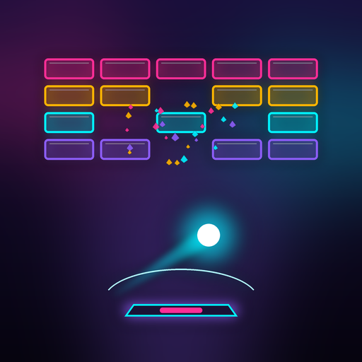

6 uzay dünyası, 48 bölüm ve her dünyanın sonunda bir boss. Kombo yaptıkça ışık hızına geç, yeni gezegenlere var, raketini atölyede güçlendir.
iPhone ve iPad için. Dikey ve yatay oynanır; parmağınla kaydır ya da telefonu eğerek yönet.
APP STORE'DAN İNDİR
6 space worlds, 48 levels and a boss at the end of each world. Chain combos to jump to light speed, arrive at new planets and upgrade your paddle in the workshop.
For iPhone and iPad. Play in portrait or landscape; swipe or tilt to steer.